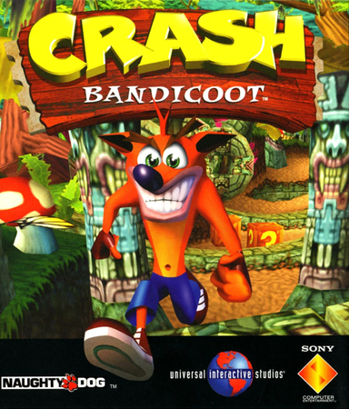
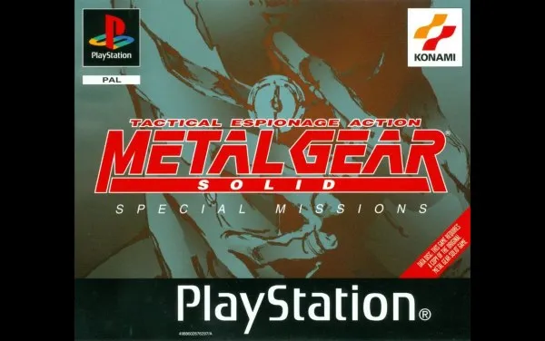
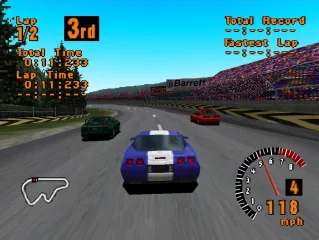

Sony PlayStation
Console que popularizou os gráficos 3D e marcou uma geração com jogos inovadores, ajudando a transformar a indústria dos videogames.
Vídeo: Playstation, o maior erro da sony?"Crash Bandicoot

Crash Bandicoot é uma franquia criada pela Naughty Dog para o PlayStation. O jogador controla Crash em fases de plataforma 3D, pulando obstáculos, quebrando caixas e derrotando inimigos. A série fez grande sucesso e se tornou um dos maiores clássicos dos videogames.
Metal Gear Solid

Metal Gear Solid (1998) é um jogo de ação furtiva da Konami para PlayStation. O jogador controla Solid Snake, que invade uma base militar para impedir um ataque nuclear da organização FOXHOUND. Foi revolucionário pelo foco em stealth, cenas cinematográficas e história marcante, tornando-se um dos jogos mais importantes da história.
Gran Turismo

Gran Turismo (1997) é um jogo de simulação de corrida desenvolvido pela Sony para o PlayStation e o primeiro da série. Ficou famoso pelo realismo, gráficos avançados e grande conteúdo, trazendo mais de 140 carros licenciados e diversas opções de personalização. Foi um enorme sucesso, vendendo mais de 10 milhões de cópias e revolucionando os games de corrida.
Menu